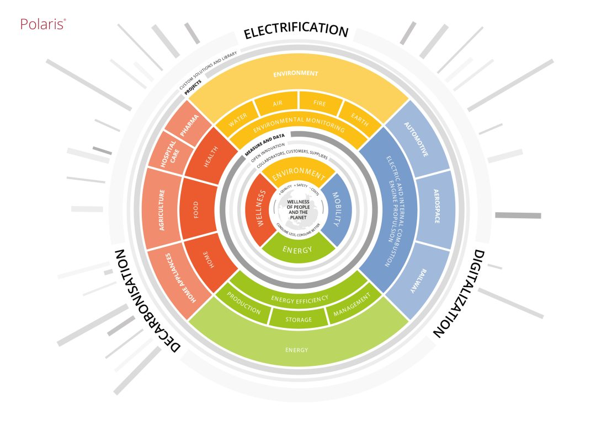

INTRODUZIONE
Durante la mia esperienza presso Loccioni, leader mondiale nei sistemi di misura di precisione e soluzioni di automazione industriale, sono stato accolto e immerso nel mondo aziendale. Ho partecipato a diversi giorni di formazione durante i quali sono stato introdotto all'azienda. Ho imparato a interpretare schemi, comprendere i sistemi di controllo e partecipare attivamente all'assemblaggio e al cablaggio del pannello di controllo.

ABILITA' E LAVORO DI SQUADRA
Durante la mia esperienza lavorativa presso Loccioni, ho partecipato attivamente a un progetto significativo focalizzato sul test di tenuta degli iniettori. In questo contesto, ho dimostrato la mia capacità di affrontare compiti complessi attraverso un pensiero critico e una notevole flessibilità intellettuale. Ho sempre dato priorità alla precisione in ogni aspetto del mio lavoro, gestendo con successo le mie responsabilità e rispettando le scadenze, anche quando lavoravo in autonomia. Inoltre, la collaborazione con il team ha potenziato le mie competenze comunicative, sia tecniche che relazionali, facilitando un'interazione chiara e trasparente tra tutti i membri del gruppo.
RAPPORTO CON I TUTOR
Ho stabilito un rapporto eccezionale con i tutor aziendali: sono stati davvero utili nel chiarire le attività da svolgere e sempre puntuali nel fornire dettagli riguardanti le giornate di formazione o l'organizzazione delle giornate lavorative. Anche il tutor scolastico si è dimostrato disponibile e interessato alle attività svolte presso Loccioni.

ASPETTATIVE ED IMPATTO SUL FUTURO
Alla fine del mio PCTO presso Loccioni, posso affermare con certezza che tutte le mie aspettative iniziali sono state pienamente soddisfatte. Questa esperienza avrà un impatto positivo sul mio futuro, permettendomi di esplorare nuovi argomenti non trattati durante le lezioni scolastiche e migliorare le mie competenze sociali, tra cui il lavoro di squadra e la costruzione di relazioni con i colleghi. Ha anche rivelato la mia capacità di adattarmi a nuove situazioni attraverso il ragionamento e le risorse disponibili. L'ambiente accogliente e di supporto presso Loccioni, con giornate di introduzione per i membri del team, ha reso la mia integrazione fluida.